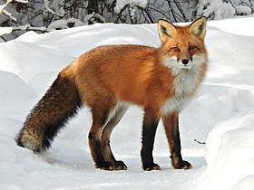
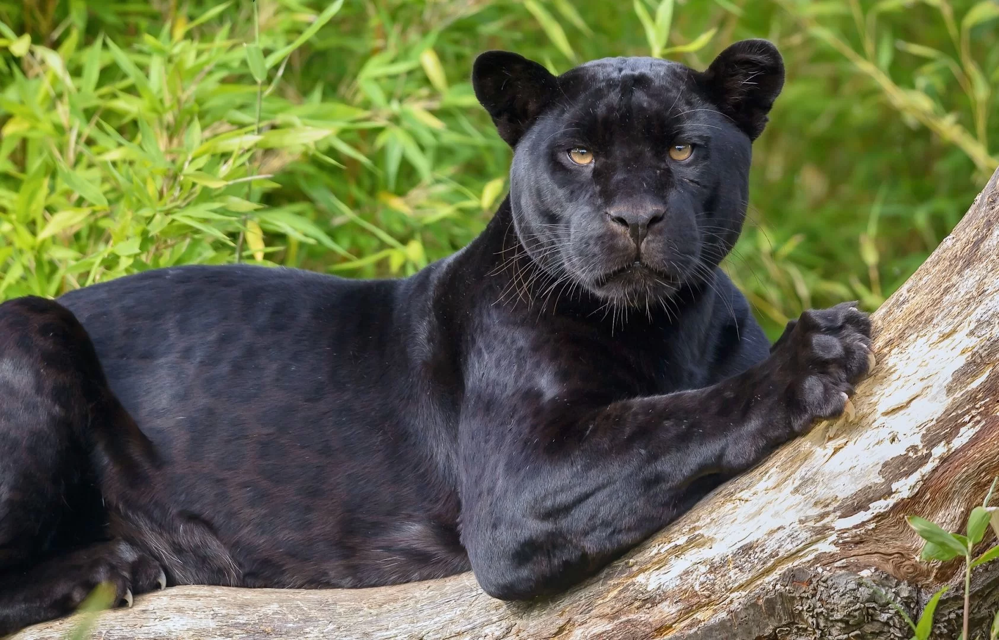

Top 10: Animais
Posição:
1° |
2° |
3° |
4° |
5° |
6° |
7° |
8° |
9° |
10° |
10ª: Posição Cobra

As serpentes, também chamadas ofídios, cobras, mbóis, mboias e malacatifas, são répteis poiquilotérmicos sem patas, pertencentes à subordem Serpentes, ou Ophidia. São bastante próximos dos lagartos, com os quais partilham a ordem Squamata.
9ª: Posição Coruja

Estrigiformes são aves da ordem Strigiformes, que inclui aves de rapina, tais como corujas, mochos e murucututu. São caçadoras eficientes, usando sobretudo seus olhos extremamente aguçados e movimentos rápidos.
8º: Posição Corvo
Corvo é uma ave da família dos corvídeos, normalmente caracterizado pela sua plumagem escura (geralmente preta) e encontrado em quase todos os continentes. Popularmente, o corvo é interpretado como o sinal místico de mau presságio.
7º: Posição Gato

O gato ou gato doméstico é um mamífero carnívoro da família dos felídeos, muito popular como animal de estimação. Ocupando o topo da cadeia alimentar, é predador natural de diversos animais, como roedores, pássaros, lagartixas e alguns insetos.
6ª: Posição Raposa

Raposas são pequenos a médios mamíferos onívoros pertencentes a vários gêneros da família Canidae. As raposas têm o crânio achatado, orelhas triangulares verticais, focinho pontiagudo e ligeiramente arrebitado e uma cauda longa e espessa
5ª: Posição Doberman
Dobermann é uma raça de cães do grupo pinscher, oriunda da Alemanha. A raça foi desenvolvida inicialmente por Karl Friedrich Louis Dobermann, em Apolda, Alemanha, por volta de 1860. Foi a primeira raça criada especialmente para proteção
4ª: Posição Lobo

O lobo é uma espécie de mamífero canídeo do gênero Canis. É um sobrevivente da Era do Gelo, originário do Pleistoceno Superior, cerca de 300 mil anos atrás. É o maior membro remanescente selvagem da família canidae.
3ª: Posição Leopardo

O leopardo é uma espécie de felídeo nativo da África e da Ásia. É, com o tigre, o leão, o leopardo-das-neves e a onça-pintada, um dos cinco grandes felinos do gênero Panthera. A espécie apresenta cerca de catorze subespécies regionais distribuídas pela África e Ásia, embora haja controvérsias quanto ao número
2ª: Posição Pantera Negra

Panthera é um gênero de felídeos que inclui animais como o tigre, o leão, a onça, o leopardo e o leopardo das neves. Todas as espécies do gênero possuem um osso hioide incompletamente ossificado, com a laringe tendo cordas vocais proporcionalmente maiores e cobertas por uma grande almofada fibro-elástica.
1ª: Posição onça pintada

A onça-pintada ou jaguar, também conhecida como onça-preta, é uma espécie de mamífero carnívoro da família dos felídeos encontrada nas Américas. É o terceiro maior felino do mundo, após o tigre e o leão, e o maior do continente americano.